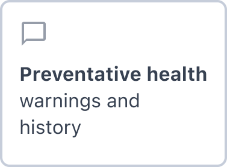
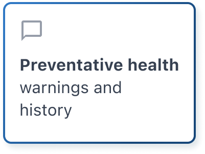
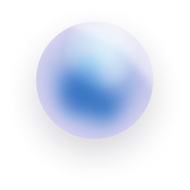
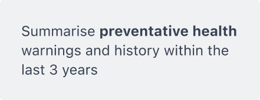
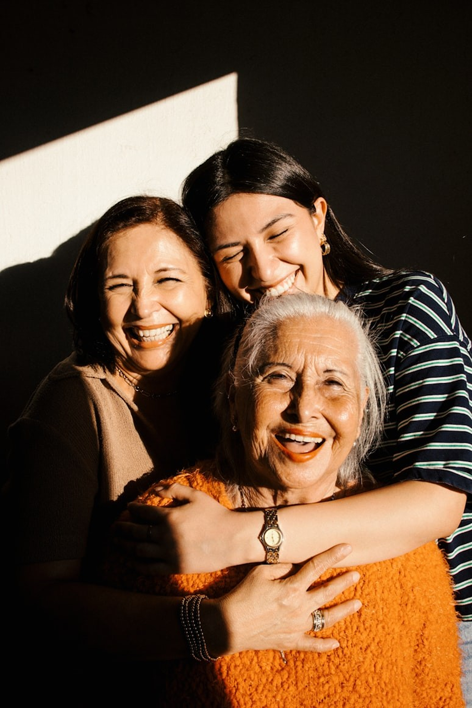
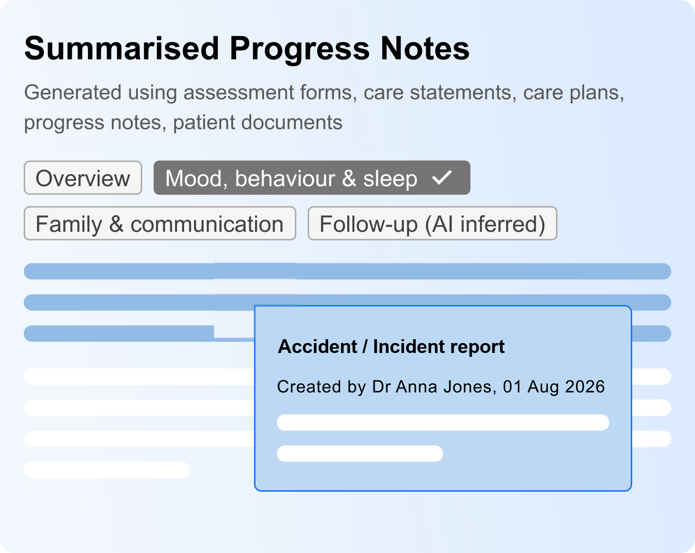

Family contacted. Daughter expressed concern regarding pain management
CASE STUDY - HEALTH CARE
Unifying data into insight for better patient outcomes



Tell me about…

AI Summary


…
Our partner in care
This digital health solutions provider sits on one of Australia’s largest health data footprints. Together, we bring product, AI, innovation, data and compliance into one way of working.
20+
digital products
16m
population records
100m
clinical billing & hospital claim transactions
60k+
residential aged care beds
However, underlying clinical records, billing claims and resident data historically operated in isolated tech stacks without a unified, cross-platform data layer.
Together, we built the foundations
for a connected, data-driven future
Our partnership set out to enhance the healthcare worker experience through better data utilisation and timelier care intervention to drive better patient outcomes.
Business Impact
Starting at the core of the problem — we architected a secure, single data platform which allowed us to innovate and test at scale. The results showed clear growth opportunities for AI-generated clinical summaries to support wider business initiatives and customer value.
$2.5m
Estimated year one opportunity identified through the Snowflake proof of concept
<10s
To generate clinical summaries using agentic AI orchestration
Multiple products
Data unified across the organisation’s product ecosystem in a single proof of concept
2 hours saved
on daily documentation review, problems caught earlier before they escalate, and time given back to healthcare workers
When the data connects, the time comes back
Appetite reduced. Diet changed to soft diet
Minor fall incident on 4 August; no injury, but fall risk increased
Medication updates in the last 72 hours
But it’s more than a time saver,
it’s a shift in how care gets delivered.
The landscape
Demand for age care
Platform fragmentation and legacy sprawl
Regulatory overhead and compliance burdens
Competitive pressure for AI enabled tools
Bottom line results, fuelled by insights from the front lines
Human Centred Design
Problem Validation
Proof of Concept

The challenge
Unifying data, enabling intelligent care, reducing administrative burdens.
A unified health data platform draws every strand of a patient's history into one governed view, and applied AI reads it - so a clinician walks in already understanding the person in front of them. Validated shoulder to shoulder with the people who carry the load.
See it in the product
Scroll to watch the platform find the note that matters — and show exactly where it came from.

Accident / Incident report
This is just the beginning of our journey together.
Our team blends design, intelligence and technology to help transform experiences and elevate moments that matter for you along the healthcare journey and ecosystem.